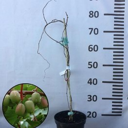
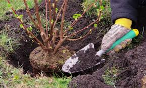
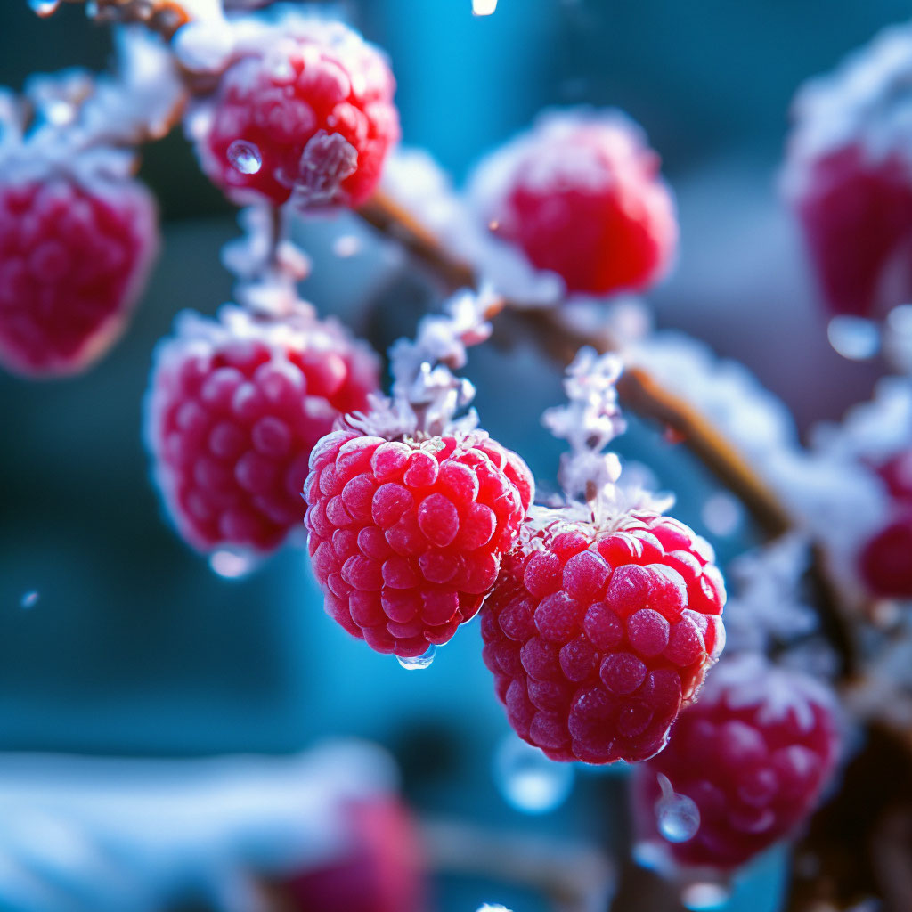
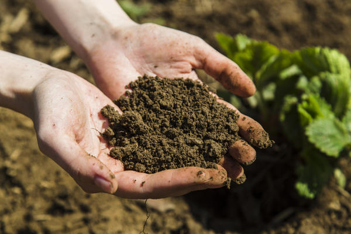
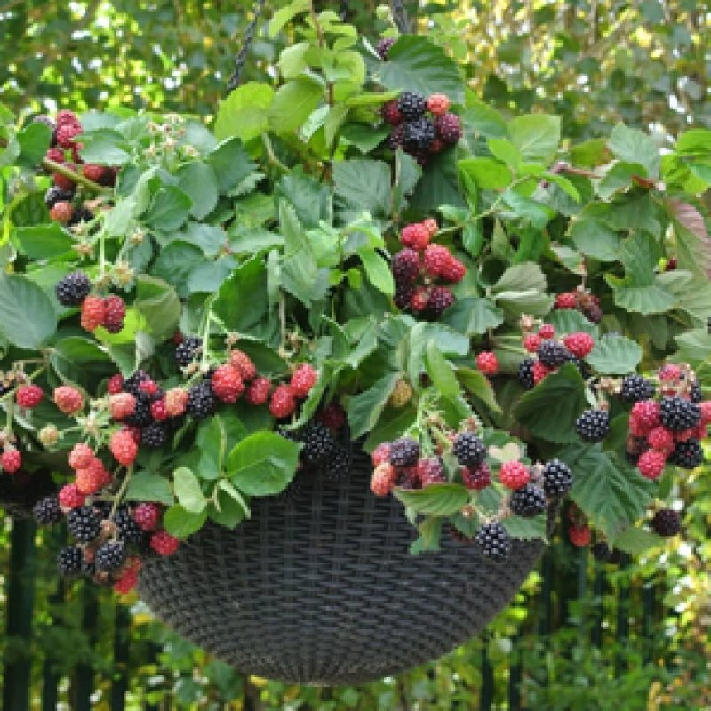

Viljapõõsa istiku valimine sõltub mitmest tegurist: aias olevast pinnasest, päikesevalguse hulgast, soovitud saagikusest ja ka maitse-eelistustest. Näiteks mustsõstar kasvab hästi niiskemal pinnasel ja poolvarjus, samas kui vaarikas eelistab päikeselist ja hästi kuivendatud kohta. Oluline on valida terve ja tugev istik, millel on arenenud juurestik ja terved pungad.
Loe edasi...

Kuidas valida õige viljapõõsa istik?

Parim aeg viljapõõsaste istutamiseks Eestis
Eestis on parim aeg viljapõõsaste istutamiseks kevad ja sügis. Kevadine istutamine võimaldab taimedel enne suve tugevalt juurduda, samas kui sügisene istutamine annab neile rahuliku alguse ja nad saavad kevadel kohe kasvama hakata. Oluline on vältida istutamist kuivade või väga vihmaste ilmade ajal ning valmistada muld korralikult ette.
Loe edasi...

Viljapõõsaste hooldus aastaringselt
Tervisliku ja saagika põõsa võti on regulaarne hooldus. Kevadel tuleb eemaldada vanad ja haiged oksad ning väetada taimi. Suvel tuleb jälgida niiskustaset ja vajadusel kasta. Sügisel on aeg valmistada taimed talveks ette, kärpides liigsed võrsed. Talvel on soovitatav katta tundlikumad sordid külma eest.
Loe edasi...

Ökoloogiline aiandus: miks valida keemiavaba viljapõõsad?
Keemiavaba viljapõõsaste kasvatamine tähendab tervislikumat eluviisi, puhtamat loodust ja maitsvamaid marju. Keemiat mitte kasutades säilitame mulla elurikkuse, toetame tolmeldajaid ja väldime terviseriske. Lisaks on mahedalt kasvatatud marjad tihti maitsekamad ja toitainerikkamad.
Loe edasi...

Populaarseimad viljapõõsad koduaeda
Eesti koduaedades on populaarseimad viljapõõsad mustsõstar, punane sõstar, tikker ja vaarikas. Need liigid on vastupidavad, annavad rikkalikku saaki ja sobivad hästi meie kliimasse. Samuti saab neist valmistada maitsvaid hoidiseid ja nautida värskelt otse põõsast. Õige sortide valik tagab rõõmu aastateks.
Loe edasi...